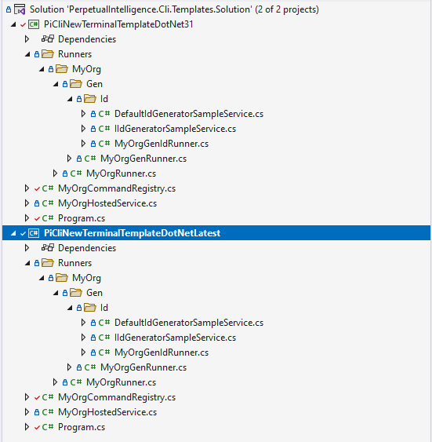
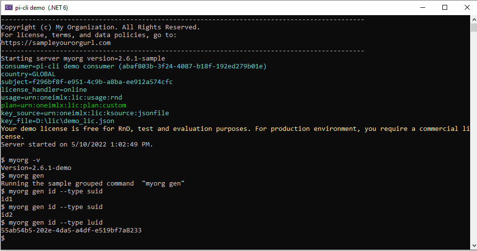
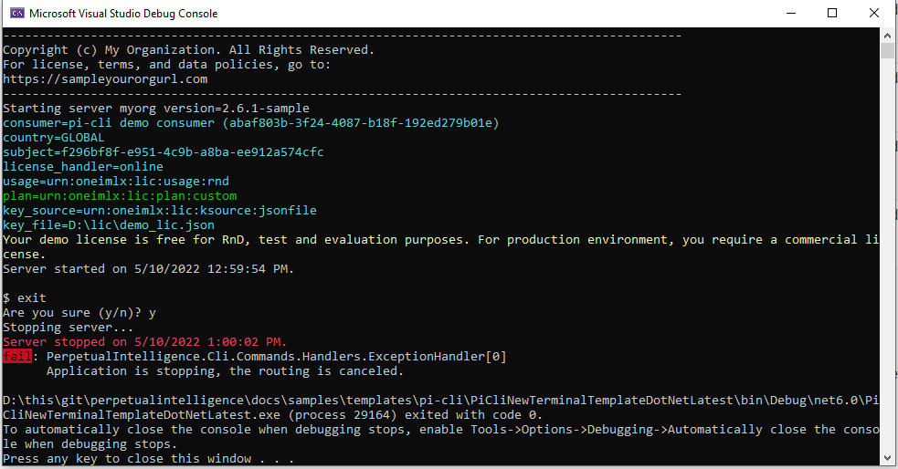

Templates
pi-cli makes it easy to build modern CLI terminals for your company, product, service, SaaS, or development and testing needs. Enterprises can create CLIs with few flags or advanced complex CLIs with organization commands, grouped commands, subcommands, arguments, and options.
Our ready-to-use sample templates allow quick onboarding for application authors to create enterprise-grade modern CLI terminals.
How do I use the templates?
Clone or download the template on your dev environment.
We provide 2 read-to-use templates:

The templates have pi-cli configured with our demo license. Build the solution PerpetualIntelligence.Cli.Templates.Solution.sln, and you are ready to go!
Details
You can use the templates to build new terminals or migrate your legacy console apps and modernize them.
This section explains the code changes in the templates. To enable pi-cli you need to:
- Install Nuget Package
- Add terminal hosted service
- Add
pi-cliand configure the options - Add descriptors and runners
- Add handlers and checkers
- Start command router
- Stop the router
Install Nuget Package
The pi-cli framework is accessible by installing the following Nuget package.

Add terminal hosted service
The CliHostedService is a hosted service that manages application lifetime, performs licensing and configuration checks, and enables terminal UX customization.
This example shows the default view when you run the template. You can customize it by overriding the methods shown in the template code below.

using Microsoft.Extensions.Hosting;
using Microsoft.Extensions.Logging;
using PerpetualIntelligence.Cli.Configuration.Options;
using PerpetualIntelligence.Cli.Integration;
using PerpetualIntelligence.Cli.Licensing;
using PerpetualIntelligence.Cli.Services;
namespace PiCliNewTerminalTemplateDotNetLatest
{
/// <summary>
/// The sample <c>myorg</c> hosted service. This class enables UX customization for your cli terminal.
/// </summary>
public class MyOrgHostedService : CliHostedService
{
/// <summary>
/// Initialize a new instance.
/// </summary>
/// <param name="serviceProvider">The service provider.</param>
/// <param name="cliOptions">The configuration options.</param>
/// <param name="logger">The logger.</param>
public MyOrgHostedService(IServiceProvider serviceProvider, CliOptions cliOptions, ILogger<CliHostedService> logger) : base(serviceProvider, cliOptions, logger)
{
}
/// <summary>
/// Perform custom configuration option checks at startup.
/// </summary>
/// <param name="options"></param>
/// <returns></returns>
protected override Task CheckHostApplicationConfigurationAsync(CliOptions options)
{
return Task.CompletedTask;
}
/// <summary>
/// The <see cref="IHostApplicationLifetime.ApplicationStarted"/> handler.
/// </summary>
protected override void OnStarted()
{
Console.WriteLine("Server started on {0}.", DateTime.UtcNow.ToLocalTime().ToString());
Console.WriteLine();
}
/// <summary>
/// The <see cref="IHostApplicationLifetime.ApplicationStopped"/> handler.
/// </summary>
protected override void OnStopped()
{
ConsoleHelper.WriteLineColor(ConsoleColor.Red, "Server stopped on {0}.", DateTime.UtcNow.ToLocalTime().ToString());
}
/// <summary>
/// The <see cref="IHostApplicationLifetime.ApplicationStopping"/> handler.
/// </summary>
protected override void OnStopping()
{
Console.WriteLine("Stopping server...");
}
/// <summary>
/// Print <c>cli</c> terminal header.
/// </summary>
/// <returns></returns>
protected override Task PrintHostApplicationHeaderAsync()
{
Console.WriteLine("---------------------------------------------------------------------------------------------");
Console.WriteLine("Copyright (c) My Organization. All Rights Reserved.");
Console.WriteLine("For license, terms, and data policies, go to:");
Console.WriteLine("https://sampleyourorgurl.com");
Console.WriteLine("---------------------------------------------------------------------------------------------");
Console.WriteLine($"Starting server myorg version=2.6.1-sample");
return Task.CompletedTask;
}
/// <summary>
/// Print host application licensing information.
/// </summary>
/// <param name="license">The extracted license.</param>
/// <returns></returns>
protected override async Task PrintHostApplicationLicensingAsync(License license)
{
// Print custom licensing info or remove it completely.
await base.PrintHostApplicationLicensingAsync(license);
}
}
}
Add pi-cli and configure the options
You enable pi-cli framework by adding the DI services in your Program.cs file. This example code shows the default configuration when you run the template.
/// <summary>
/// Configures the required <c>pi-cli</c> services.
/// </summary>
void ConfigureServices(IServiceCollection services)
{
Console.Title = "pi-cli demo (.NET 6)";
services.AddCli(options =>
{
// Error info
options.Logging.ObsureErrorArguments = false;
// Commands, arguments and options
options.Extractor.ArgumentAlias = true;
options.Extractor.ArgumentPrefix = "--";
options.Extractor.ArgumentAliasPrefix = "-";
options.Extractor.DefaultArgumentValue = true;
options.Extractor.DefaultArgument = true;
options.Extractor.ArgumentValueWithIn = "\"";
options.Extractor.ArgumentValueSeparator = " ";
options.Extractor.Separator = " ";
// Checkers
options.Checker.StrictArgumentValueType = true;
// Http
options.Http.HttpClientName = "pi-demo";
// Licensing
options.Licensing.AuthorizedApplicationId = DemoIdentifiers.PiCliDemoAuthorizedApplicationId;
options.Licensing.LicenseKey = "D:\\lic\\demo_lic.json"; // Download the license file in this location or specify your location
options.Licensing.ConsumerTenantId = DemoIdentifiers.PiCliDemoConsumerTenantId;
options.Licensing.Subject = DemoIdentifiers.PiCliDemoSubject;
options.Licensing.ProviderId = LicenseProviders.PerpetualIntelligence;
}).AddExtractor<CommandExtractor, ArgumentExtractor, DefaultArgumentProvider, DefaultArgumentValueProvider>()
.AddArgumentChecker<DataAnnotationsArgumentDataTypeMapper, ArgumentChecker>()
.AddStoreHandler<InMemoryCommandStore>()
.AddErrorHandler<ErrorHandler, ExceptionHandler>()
.AddTextHandler<UnicodeTextHandler>()
.AddCommandDescriptors();
// Add the pi-cli hosted serce for terminal customization
services.AddHostedService<MyOrgHostedService>();
// Add the HTTP client factory to perform license checks
services.AddHttpClient("pi-demo");
// Add custom DI services
services.AddScoped<IIdGeneratorSampleService, DefaultIdGeneratorSampleService>();
}
Add descriptors and runners
The template contains a MyOrgCommandRegistry.cs file to register all the commands and argument descriptors. This class can be easily unit tested natively with MSTest, xUnit, or other test frameworks.
Note: A command descriptor has a command runner type and an optional custom command checker.
For runners, we recommend you create the Runners folder and place all your command runners in a subdirectory as per their command prefix.
Example:
myorg gen id command string has a runner in \Runners\MyOrg\Gen\Id folder. It enables having a clear separation of concerns for each command, and you can also have custom services for your command at the same place.

Add handlers and checkers
The template will register various default handlers and checkers. You can provide custom handler implementations as per your application needs. For more information see handlers and checkers.
.AddArgumentChecker<DataAnnotationsArgumentDataTypeMapper, ArgumentChecker>()
.AddStoreHandler<InMemoryCommandStore>()
.AddErrorHandler<ErrorHandler, ExceptionHandler>()
.AddTextHandler<UnicodeTextHandler>()
By default, the pi-cli terminal supports Unicode text handler. You can build your CLI terminals for any Unicode supported left-to-right langauge.
Start command router
The last step is to start the command router in the Main method to receive and run the user commands.

private static async Task Main(string[] args)
{
// Allows cancellation for the terminal.
CancellationTokenSource cancellationTokenSource = new CancellationTokenSource();
// Setup the host builder.
IHostBuilder hostBuilder = CreateHostBuilder(args, ConfigureServices);
// Start the host. We don't call Run as it will block the thread. We want to listen to user inputs.
using (var host = await hostBuilder.StartAsync(cancellationTokenSource.Token))
{
await host.RunRouterAsync("$ ", cancellationTokenSource.Token);
}
}
Stop command router
You can stop the command router explicitly or programmatically in the following ways:
- User can send the standard
CNTRL+Csignal to the hosted service - User can use the
exitcommand to issue a cancellation token - Application can programmatically issue a cancellation token
